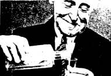

Many people who consider themselves procrastinators are skeptical
of water. They hate to drink it, they rarely wash with it, they're even afraid to
snowboard on it, unless of course it's snow. At best, they might smoke through it
or use it to make ice cubes. Well, this article means to bring water out of the closet
and onto to table of today's slacker. Although it's rarely tried in these times, water
has been scientifically proven to be better at thirst-quenching than alcohol. Of course
the scientific answer to thirst is only one half of the pie. For the other, more spiritual
answer to thirst, nothing under 40% alcohol will really do. And yet, notes theologian Doctor B
(B as in Brains) Twilite, "Water is the most potent alcohol known to man. It's as lubricating
and intimate as any other liquld you'll find." In this article we will teach water novices the
"ins" and "outs" of this ancient, elusive substance. As for your regular, more experienced users,
we'll tell you a few things you should know, that might make you realize that you may be abusing
your water privileges (NOTE: It is highly recommended your read this article several times before
working with water unsupervised. The Procrastinator will not be held responsible for any injuries,
aka: burned tongue, extreme wetness, cleanliness, etc.)
Any New Yorker will tell you, "The water here, it's so good, it comes from Saugerties." Oh really? Saugerties? Woodstock 1994? You want a bunch of mud-caked post-hippy wackos sploshing through your digestive tract? Do you know what sort of mind altering chemicals they would like to add to your drinking water? Do you want to end up helpless on your kitchen floor, giggling like an idiot? If the answer is no, then only bottled for you. Now the next decision: Which kind? In your local grocery store you'll find a whole aisle devoted to bottled water. Here's some tips for finding the right one for you: (1) Make sure the water is clear, you should be able to see right through it. 2) Make sure the bottle is clean and capped. Do not buy it if it is already opened half drunk and 3) make sure it's inexpensive. Water is water, no matter
how "chic" the packaging or exotic the place of origin. Water prices vary from as low as free to well over $5. The highest
price ever paid for water was $350,000, in August, 1967, for water that allegedly fell from the sky. ("It just fell right out of
them clouds up there" described one bewildered ranch-hand). Also avoid buying any dried water "packets" such as the recently
marketed "instant water", or "powdered water".
Several underemployed political activists have declared water "a priceless commodity that should be taxed no more than air." With massive underwriting, they will soon be releasing a plan to make water an official candidate for the presidency. "Our goal is that by 2001 all water will be free." noted spokesperson Julia Graham. Their global strategy will include continued encouragement of the rain and rivers, and several indoor-outdoor pools for members of the coalition. The lakes and oceans will be fortified daily with rain that will be "dropped from large clouds that will regularly circulate the skies." When asked how long the air support was likely to continue, Ms. Graham replied, "Perhaps indefinitely." And as for the icebergs in the Arctic and Antarctic? "For now we will let them stay frozen," she said. In addition, peaceful demonstrators will begin invading supermarkets and pouring out all the bottled water they see. Bottled water is a violation of water's civil rights, according to the group, which is also trying to make illegal all acts of "water abuse" including unnecessary splashing, boiling, and gargling. "Also, though it's hard to believe, a lot of hatred is directed towards the water. I've known people, decent upstanding citizens, will abuse water, or berate and humiliate it when no one is looking. If you're a water drinker, from the first sip on, you owe it to water to appreciate it, to love it with vigor!"
Mornings: Try some water with your coffee beans, it makes for a delicious brew when heated and mixed with cream. Other uses for water? A mouthful of it toothpaste around long enough will get rid of toothpaste and bathing in it has been recently proven to increase cleanliness (Note: Bathing, or "showering" has long been a popular past-time, especially in Los Angeles.
"It would be a desert here without it" commented one resident. Shortages in their dry town have made bathing an act of environmental terrorism. You,
however, have no excuse. Afternoons: If you have to work, work with water. Water can help you swallow aspirins, libriums and whatever else you need
to got you through the day. After enough water is consumed you may feel an urge to go to the bathroom, and since you're getting paid anyway, you might
as well go and take your time. Evenings: Generally, water is avoided from the time you leave work to the time you go to sleep, during which times, either
alcohol or more alcohol should take its place. Upon retirement, however, a large glass of water is recommended. Don't drink it, of course, just let it stand
on the night-table as you sleep, serving as a constant reminder, a gentle assurance that your best and strongest friend, water, is there to protect you.
Ask anybody lost in the desert for days, dying of dehydration and they'll be happy to tell you. "Water...I must have water." And so must you, too. It not only tastes like nothing else on earth, (that is, nothing) but it also cures colds, helps you to lose weight, relieves stomach cramps, loosens drainpipes, helps strip-miners get rich, conceals criminal evidence, floats newspaper hats and very often helps as a diuretic. Not only is it an essential ingredient to your life, it also can add in your decomposition. If you haven't started using water yet, gel cracking! You won't regret it. And if you're a longtime water user like me, I guess now that you know how important water is you won't take it for granted again. So let's all make a toast, and raise a glass of whiskey...to water!

The day I died, no I didn't really.
but I could've once and that's enough.
Enough to justify, enough to lust a lie.
A hair in the soup of smiles?
A whiskey shot in a minute and a mile.
A fingertip doused in odd oil.
That something along the epidermal state
a sonnet
"Tht breathe"
Residents of Santa Mana, California say cannibalism may be "just about the hottest thing yet, dude", at least so believes a swarthy Kathy McLeland as she dips one of Longpig Larry's new friarfingers into her tub of "Nun Sauce". Longpig Larry, a new fast food chain opening along the West Coast serves steaming plates of meat dishes made from clergymen accused of molestation to swarming, sweaty hordes of hungy Californians. Longpig Larry, or "Lungfish Leroy", as his friends know him, has a long history of crispy cuisine, combined with a deep bloodthirst for the church. He started as a disgruntled altar boy, who "accidentally" knocked a lusty monsignor into an open furnace. The results were delicious! "My policy is 'the hornier the priest, the jucier the feast'", says Larry. Yum! Yum!
MEXICAN MUD T-SHIRTS NOW ONLY TEN BUCKS! (black ink/white shirt, white ink/black shirt, black ink/red shirt)
- Custom orders available (212) 759-0454.
MEXICAN MUD CD "NOW WITH MORE SALT" ONLY TWELVE BUCKS! Hear "Mayor's Daughter", "Stupid Pride", "Free and Sloppy". Why, it has virtually all your Mud favorites!
MEXICAN MUD TAPE "NOW WITH MORE SALT" ONLY EIGHT BUCKS! For your walkman and car listening pleasure, this economical purchase satisfies, with cracking clarity.
STICKERS ARE FREE!!!!
MEXICAN MERCHANDISE
951 2nd Avenue New York New York 10022
4
The Procrastinator July, 1994